Due: Thursday, January 31, 2002.
- 1.
- Let the system Ax=b be defined by:
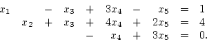
Let
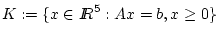.
The point
x=(1,4,0,0,0)T is a basic feasible solution for this
problem. Find all the bases corresponding to this bfs.
- 2.
- In what follows, (P) refers to the standard form linear programming problem
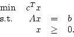
Here,
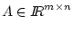,
the dimensions of x, c, and b
are defined appropriately, and 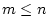.
Let K be the feasible region of (P).
- (a)
- Construct a linear programming problem of the form (P)
with dim(K)>n-m.
- (b)
- Construct a feasible
linear programming problem of the form (P)
with dim(K)<n-m, 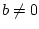,
and rank(A)=m.
- (c)
- In part (b),
the linear program you defined has
a degenerate basic feasible solution.
What are the bases associated with that bfs?
- 3.
- Consider the linear programming problem
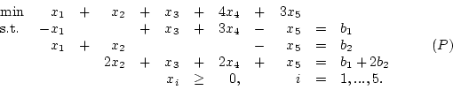
Assume that
the problem (P) has an optimal solution 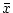,
where
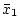,
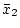
and 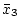
are basic.
- (a)
- What is the dual to this linear program?
- (b)
- Use complementary slackness to find an optimal solution
to the dual problem.
- 4.
- Consider again the problem (P) in Question 3.
- (a)
- Looking purely at the optimal dual solution you found above,
can you conclude that
no optimal primal solution will have x4>0? What about x5?
- (b)
- The optimal dual solution
is not unique: there are
other optimal solutions of the form
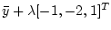.
What is the largest possible value of ?
Do these other optimal solutions imply anything about the values of
,
and ?
Do they imply anything about the values of x4 and x5 in any
optimal solution to (P)?
- 5.
- Consider the subspace alternative theorem:
For
and
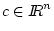,
exactly one of the
following holds:
- (a)
-
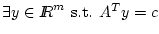
- (b)
-
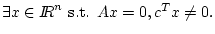
Develop a proof for this along the following lines:
First observe that both (a) and (b) can not hold simultaneously.
Thus, it suffices to show that when (a) fails, (b) must hold.
Next assume (a) fails and then construct an x which satisfies (b).
(Hint: You may assume that,
given a matrix
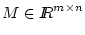
and a vector
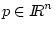,
there exist unique p' and p'' such that
p=p'+p'', Mp'=0, p''=MTq for some q, and p'Tp''=0.)
John Mitchell
2002-01-17